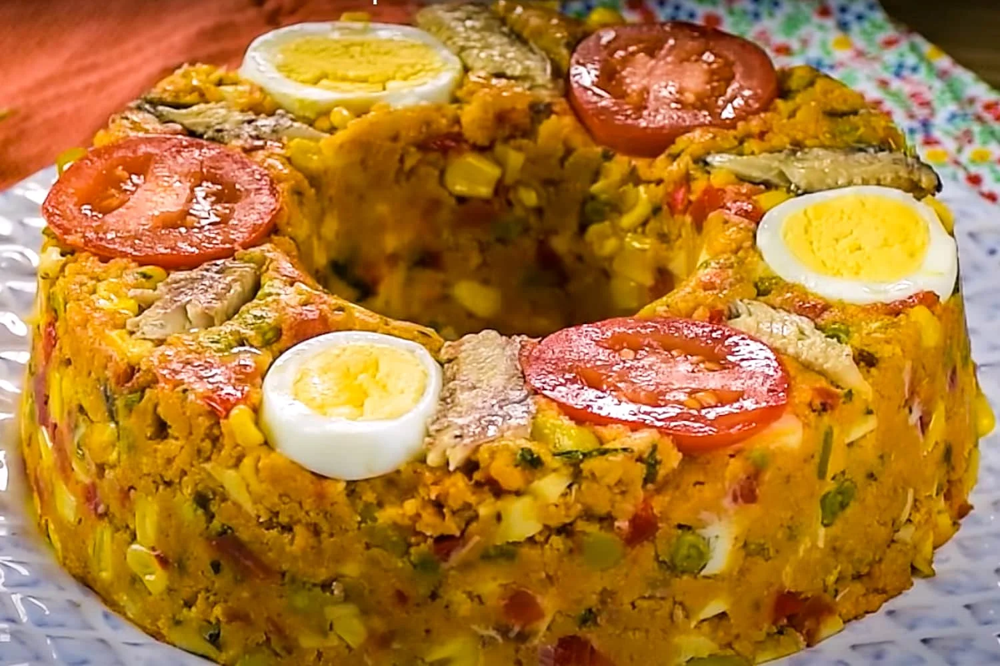
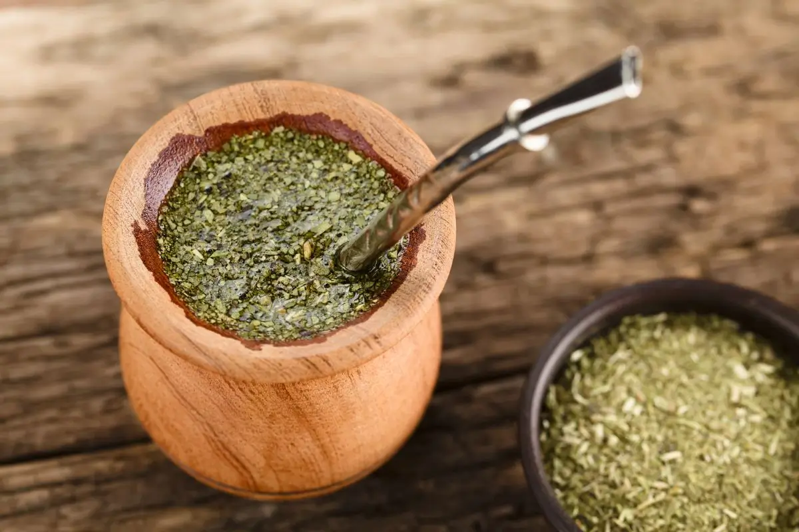

Região Norte
A gastronomia da Região Norte é fortemente influenciada pela cultura indígena e pelos ingredientes da Amazônia. Os pratos utilizam elementos típicos como tucupi, jambu, mandioca e peixes de água doce. Entre os destaques estão o tacacá, o pato no tucupi e a maniçoba, além do açaí consumido de forma tradicional, geralmente sem açúcar e acompanhado de farinha ou peixe.

Região Nordeste
A culinária nordestina é marcada pela mistura de influências africanas, indígenas e portuguesas, resultando em sabores intensos e únicos. Há grande uso de azeite de dendê, leite de coco e frutos do mar. Pratos típicos incluem acarajé, vatapá, moqueca baiana e baião de dois, que refletem a riqueza cultural e histórica da região.

Região Centro-Oeste
A gastronomia do Centro-Oeste está ligada à vida rural e às tradições do Pantanal, com forte presença de ingredientes regionais e carnes. Pratos como arroz com pequi, sopa paraguaia, empadão goiano e carne de sol são bastante populares, destacando sabores fortes e característicos da região.

Região Sudeste
A culinária do Sudeste é a mais diversificada do país, influenciada pela imigração europeia, principalmente italiana e portuguesa. Nessa região encontram-se pratos como feijoada, pão de queijo, virado à paulista e diversos tipos de massas e doces, especialmente em grandes centros urbanos.

Região Sul
A gastronomia da Região Sul possui forte influência europeia, especialmente alemã e italiana, o que se reflete nos ingredientes e modos de preparo. O churrasco é um dos maiores símbolos da região, além de pratos como barreado, galeto e comidas típicas coloniais, acompanhados frequentemente por vinhos produzidos localmente.
